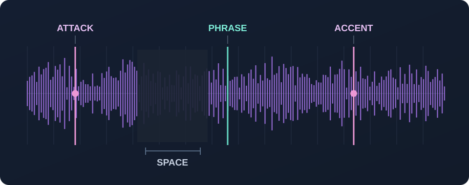

Sample chopping can give electronic music a feel that’s hard to manufacture with perfectly repeated notes. A voice cut into little accents, a dusty chord, an unexpected bit of percussion—these fragments can become the thing that makes a loop memorable.
The key isn’t chopping everything into tiny pieces. It’s finding the right fragments and letting them work with the rhythm. Here are seven approaches you can try, whether you’re working on a computer or making music on your phone.
Choose source material with character
Great chops start with something worth listening to. A vocal syllable, an electric-piano chord, an old break, a field recording or a tiny melodic detail can all be more useful than a perfectly polished loop.
Listen for texture, movement and a distinct attack. A sound that has a recognizable beginning or an unusual tail is often easier to turn into a rhythmic phrase. Try a few seconds at a time rather than hunting for a flawless, fully produced passage.
Chop for rhythm, not just melody
In electronic music, a sample can act like a percussion instrument. Before worrying about its notes, listen for where the natural accents fall. A clipped vocal can reinforce a snare; a chord stab can answer a kick.
Start by placing one slice on an offbeat. Then move it an eighth or sixteenth note earlier or later. Small changes in placement often do more for a groove than adding more material.

Keep your slices short enough to rearrange
Long chops preserve the original phrase. Shorter slices give you more freedom to change the rhythm, reverse the order of a melody, add stutters or build a call-and-response pattern.
Keep a little of each sound’s attack so it still speaks. Cut too close and it may click; leave too much silence in front and it can sound late. There’s no fixed slice length that works for every sample—use your ears and adjust the boundaries.
Leave space between chops
A loop filled with nonstop slices rarely feels as striking as one with a clear rhythmic idea. Leave room for the kick, snare and bass. A gap creates anticipation; the next chop becomes more noticeable because of it.
Try muting half the slices in a pattern. If the groove gets stronger, you’ve found the direction.
Pitch and warp with intention
If your sample clashes with the bass or chords, experiment with its pitch. Shifting it by a semitone or two may be enough. For rhythmic material, precise harmonic matching may be less important than how the sample feels against the drums.
Warping can help a phrase follow the project tempo, but aggressive time-stretching may blur transients and introduce audible artifacts. Compare the warped and original versions, and keep the version that sounds better—not simply the one that looks more aligned on a grid.
Get the groove working before the arrangement
Build a short loop from just three parts: drums, bass and one chopped-sample pattern. Play it long enough to hear whether the accents still feel good after a few repeats.
Once the loop has an identity, create variation by removing a hit, bringing a slice back at the end of a phrase or changing the order of just two chops.
Give every chop a purpose
Not every sample needs to be the hook. One chop might supply a recurring stab. Another might be a little response at the end of every second bar. A third might appear only to lead into a new section.
Ask what a chop is contributing. If you can’t tell, mute it for a few passes. A strong pattern is one you understand, not one with the highest number of notes.

Make chops on the go with ZPUNK.
ZPUNK has a built-in sampler with up to 16 chops, pitch controls, tempo tools and a step editor for turning slices into patterns—alongside drums, bass, synths and an arrangement view.
Final thoughts
Good chopping is less about the number of slices and more about what each one does. Start with a sound that has character, find a rhythm you like, leave space and resist the urge to make every fragment play.
A short, thoughtfully placed phrase can carry an entire groove.
← Back to the blog